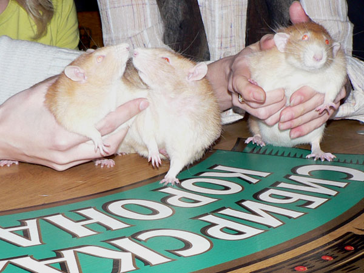

Апрель 2008
Встреча крысоводов на день рождения Гитлера (мои фото).

Элвис: — Телячьи нежности!

Эрик быстро пошел по рукам. Каждый хотел его
взвесить хотя бы приблизительно.
877 грамм, если кому интересно.

Вот так его гладили...
И так...

Эрик идет на ручки к хозяйке.
Эрик и креветка. Натюрморт.

Эрик и курица. Пейзаж.
Элвис тоже бегал по столу, запыхался и решил пополнить запас жидкости в организме.

Дон Румата в начале встречи.
Дон Румата реквизирует креветку.

И его тоже гладили. Даже вдвоем: отдельно туловище, отдельно хвост.
Скромняга.

Не скромняга.
А потом на него почему-то на столе окрысился Элвис.
Дон Румата сразу же удрал в капюшон и сидел там полчаса с несчастным видом.

Но потом начал требовать очищенных креветок и приободрился.
И освоил карман помимо капюшона.

А потом вылез и пошел гулять по столу во второй раз.

А это Gara с крысой.
Огроменная и симпатичная.
Первый раз такую крыску вижу, обычно они меньше.